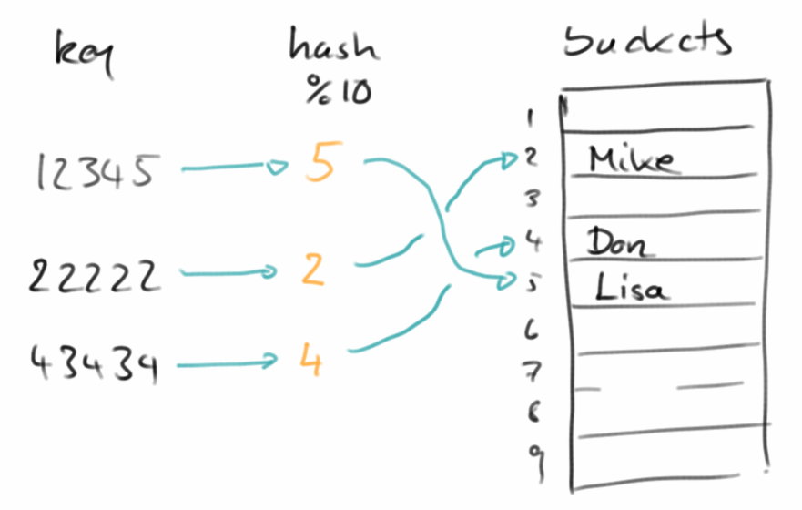

Containers: Maps & Sets
Nach den sequentiellen Containern wollen wir uns nun mit den assoziativen Containern beschäftigen. Beispiele für assoziative Container sind Maps und Sets. Assoziative Container haben keine Reihenfolge, dafür haben sie aber eine Beziehung, in der Regel durch Schlüssel-Wert Paare. Assoziative Container sind extrem schnell, sowohl beim Lesen als auch beim Schreiben.
.
Maps
Eine Map ist eine Sammlung von Schlüssel-Wert Paaren (key-value pairs), die manchmal auch als Wörterbuch (dictionary) bezeichnet wird. Sie hat die Eigenschaft, dass mit jedem Schlüssel genau ein Wert assoziiert ist. Und die Schlüssel sind eindeutig, es kann also keine zwei Schlüssel mit dem gleichen Wert geben. Die grundlegenden Methoden, die von einer Map unterstützt werden, sind:
- size(): gibt die Anzahl der Schlüssel (und/oder Werte) in einer Map;
- put( key, value ): fügt ein neues Schlüssel-Wert Paar in die Map ein;
- get( key ): gibt den Wert zurück, der unter diesem Schlüssel gespeichert ist;
- remove( key ): entfernt den entsprechenden Schlüssel und damit natürlich auch den dazugehörigen Wert;
- containsKey( key ): stellt fest ob der gegeben Schlüssel in der Map vorhanden ist. Ist extrem schnell.
In Java gibt es mehrere Implementierungen des Map Interfaces: die wichtigsten sind die HashMap und die TreeMap.
Sehen wir uns einfach mal ein Beispiel an. Wir verwenden eine HashMap für ein deutsch-englisches Wörterbuch:
// init map
Map<String, String> dictionary = new HashMap<String, String>();
// add words
dictionary.put("hund", "dog");
dictionary.put("katze", "cat");
dictionary.put("fisch", "fish");
println("There is a total of " + dictionary.size()
+ " words in the dictionary.");
// translate a word
println("'hund' translates to: " + dictionary.get("hund"));
// remove a word
dictionary.remove("hund");
// list all remaining words
println("All remaining words:");
for (String word : dictionary.keySet()) {
println(word + ": " + dictionary.get(word));
}
Typische Anwendung für Maps sind z.B.,
- ein Wörterbuch, das ein deutsches Wort auf ein englisches Wort abbildet;
- ein Telefonbuch, das einen Namen auf eine Telefonnummer abbildet;
- ein Thesaurus, der ein Wort auf seine Synonyme abbildet.
Mit Maps kann man aber auch alles machen, was man auch mit Listen machen kann. Da Maps aber um einiges schneller sind, sollten wir eigentlich nur noch Maps verwenden.
.
HashMap
Die Map die wir am häufigsten verwenden werden ist die HashMap (auf Deutsch Streuwerttabelle). Die zugrundeliegende Datenstruktur einer HashMap ist ein ganz normales Array. Das wird ähnlich wie bei der ArrayList am Anfang mit einer gewissen Anfangsgröße, der Capacity, angelegt. Was allerdings ganz anders ist, wie auf das Array zugegriffen wird. Hier verwendet die HashMap eine sogenannt Hash-Funktion.
Um zu verstehen wie das funktioniert, nehmen wir mal an wir möchten ein umgekehrtes Telefonbuch implementieren, d.h., wir sehen die Nummer einer Person die uns anruft auf dem Display, und wir möchten wissen wer das ist:
12345 -> Lisa 22222 -> Mike 43434 -> Don
Wenn jetzt die Capacity unseres zugrundeliegenden Arrays 10 ist, dann könnte man folgende Funktion als Hash-Funktion verwenden,
int index = number % 10;
und index wäre dann die Position im Array unter der wir den Namen speichern würden, also Lisa an Index 5, Mike an Index 2 und Don an Index 4.
Wir können das auch ganz einfach in Code umsetzen: Wir definieren eine Klasse SimpleHashMap wie folgt:
public class SimpleHashMap {
private String[] data;
private int capacity = 10;
public SimpleHashMap() {
data = new String[capacity];
}
D.h. wir haben ein String-Array angelegt für zehn Strings. Zusätzlich definieren wir unsere Hash-Funktion,
private int hashCode(int key) {
return key % capacity;
}
Was noch fehlt sind die put() und get() Methode, die sind trivial:
private void put(int key, String value) {
data[hashCode(key)] = value;
}
private String get(int key) {
return data[hashCode(key)];
}
}
Das war's schon. Wir können jetzt unsere SimpleHashMap wie jede normal Map verwenden:
SimpleHashMap reversePhoneBook = new SimpleHashMap();
reversePhoneBook.put(12345, "Lisa");
reversePhoneBook.put(22222, "Mike");
reversePhoneBook.put(43434, "Don");
println("22222: " + reversePhoneBook.get(22222));
Der Vorteil der HashMap ist, dass sie sehr schnell beim Lesen und sehr schnell beim Schreiben ist, also das Beste was uns passieren kann.
Allerdings hat auch die HashMap ein paar Einschränkungen:
- Wenn wir mehr als 10 Elemente in unserer SimpleHashMap schreiben wollen, dann geht uns der Platz aus. Das ist aber das gleiche Problem bei der ArrayList. Wir lösen es, in dem wir einfach ein größeres Array nehmen.
- Es kann zu sogenannten Collisions kommen, das ist wenn zwei verschiedene Nummern auf den gleichen Index zeigen würden. Z.B. bei unserer einfachen Hash-Funktion oben, würden die beiden Nummer 12345 und 55555 beide auf den Index 5 gemappt werden, wir würden also versuchen zwei Einträge an der gleichen Stelle zu speichern. Zum Einen versucht man Kollisionen durch die Wahl guter Hash-Funktionen zu minimieren. Kommen sie trotzdem vor, dann kann man das auch lösen, indem man z.B. am Index 5 einfach eine Liste speichert, und dort dann beide Werte reinschreibt.
- HashMaps haben keine Ordnung: d.h. wenn wir über die Elemente der Map iterieren, ist die Reihenfolge nicht vorhersehbar. Bei einer HashMap ist das einfach so. Aber es gibt die Klasse LinkedHashMap bei der die Reihenfolge in der die Elemente eingefügt wurden beibehalten wird, und es gibt die TreeMap, die ihre Elemente sortiert. Beide sind aber nicht ganz so schnell wie die normale HashMap.
Zum Schluss noch eine kleine Anmerkung bzgl. guter Hash-Funktionen: Hier kann man sich von Java selbst inspirieren lassen, im Source Code der OpenJDK findet man die Implementierung der hashCode() Funktion der Klasse String:
public int hashCode() {
int h = hash;
if (h == 0 && value.length > 0) {
char val[] = value;
for (int i = 0; i < value.length; i++) {
h = 31 * h + val[i];
}
hash = h;
}
return h;
}
Der Algorithmus erinnert etwas an den ISBN Algorithmus. Es sei angemerkt, wenn wir vorhaben, unsere selbst geschriebenen Klassen in einer HashMap zu speichern dann sollten wir unbedingt die hashCode() Methode unserer Klasse überschreiben.
.
 Sets
Sets
Kommen wir zur zweiten Datenstruktur in diesem Kapitel, den Sets (Mengen auf Deutsch). Sets sind amputierte Maps, ihnen fehlen die Werte. Ein Set ist also keine Sammlung von Schlüsselwertpaaren, sondern eine Sammlung von nur Schlüsseln. Das hört sich jetzt schlimm an und scheint auch nutzlos zu sein, ist es aber nicht, ganz im Gegenteil.
Die Schlüssel bei den Sets sind wie bei den Maps auch eindeutig, es kann also keine zwei Schlüssel mit dem gleichen Wert geben. Das ist auch schon eine der ersten praktischen Eigenschaften wofür man Sets verwenden kann: zum Entfernen von Duplikaten. Sets verwendet man auch wenn man feststellen möchte ob ein Element in einem Set ist oder nicht. Das geht extrem schnell. Und wenn man zwei Sets hat, kann man diese Zusammenfügen (Union), die Schnittmenge der beiden bilden (Intersection), oder die eine von der anderen abziehen (Difference). Man kann auch feststellen ob zwei Sets gleich sind, oder ob ein Set eine Untermenge des anderen ist. All diese Operationen sind extrem schnell.
Welche Methoden braucht ein Set? Die einfacheren sind,
- size(): gibt die Größe des Sets zurück;
- add( key ): fügt ein neues Element ins Set ein;
- remove( key ): entfernt das Element key aus dem Set;
- contains( key ): stellt fest ob das Element key im Set ist. Extrem schnell.
In Java verwenden wir normalerweise das HashSet, wenn's sortiert sein soll auch mal das TreeSet.
Um zu sehen, wie dies in der realen Welt verwendet wird, schauen wir uns ein Beispiel an:
// init set
Set<String> pizza = new HashSet<String>();
// add entries
pizza.add("tomato");
pizza.add("olives");
pizza.add("cheese");
pizza.add("anchovies");
println("Pizza has " + pizza.size() + " toppings.");
println("Pizza has anchovies: " + pizza.contains("anchovies"));
// remove one topping
pizza.remove("olives");
println("Pizza has " + pizza.size() + " toppings.");
// list all remaining toppings
println("All remaining toppings:");
for (String topping : pizza) {
print(topping + ", ");
}
.
Das ist zwar alles sehr nett, aber nicht wirklich nützlich. Was wirklich den Unterschied macht sind die erweiterten Funktionen:
- addAll( set ): fügt eine ganzes Set diesem hinzu, wird auch als Union bezeichnet;
- retainAll( set ): behalte nur die Elemente die in beiden Sets sind, wird auch Intersection genannt;
- removeAll( set ): entferne alle Elemente die in dem anderen Set sind, bezeichnet man auch als Subtraction;
- equals( set ): stellt fest ob die zwei Sets identisch sind;
- containsAll( set ): stelle fest ob das Set set eine Untermenge ist.
Alle diese Operationen sind sehr schnell!
Um zu sehen, wie wir diese Methoden verwenden, kehren wir noch einmal zu unserem Pizzabeispiel zurück:
// init set
Set<String> pizza = initPizza();
println(pizza);
Set<String> allergic = new HashSet<String>();
allergic.add("anchovies");
allergic.add("peanuts");
println(allergic);
pizza.removeAll(allergic);
//pizza.addAll(allergic);
//pizza.retainAll(allergic);
println(pizza);
Wie praktisch das ist sieht man erst, wenn man sich nur einmal ansatzweise überlegt wie man das denn mit Arrays umsetzen wollte. Das Set ist unberechtigter Weise eine etwas vernachlässigte Datenstruktur. Es lohnt sich sie kennenzulernen, denn sie ist bei weitem das schnellste was es so an Datenstrukturen gibt.
.
Iterator
Die Existenz des Iterators haben wir bisher unterschlagen, obwohl wir ihn schon zweimal verwendet haben. Als wir im letzten Kapitel alle Städte unserer Rundreise auflisten wollten, hätten wir einen ganz normalen for-Loop verwenden können:
// list all cities via normal for loop:
for (int i = 0; i < cities.size(); i++) {
String city = cities.get(i);
print(city + ", ");
}
Anstelle haben wir aber den for-each Loop verwendet:
// list all cities via for-each loop:
for (String city : cities) {
print(city + ", ");
}
Man liest das so: "für jede city aus der Liste cities tue das folgende...". Es ist super-praktisch und erspart einem viel unnötige Schreibarbeit.
Woher kommt das aber? Der for-each Loop benutzt implizit den Iterator:
// list all cities via iterator: Iterator iter = cities.iterator(); while (iter.hasNext()) { String city = (String) iter.next(); print(city + ", "); }
Sowohl Listen, als auch Maps und Sets stellen einen Iterator über die Methode iterator() zu Verfügung. Dieser erlaubt es durch die Liste oder Map durchzuiterieren, d.h. beginnend vom ersten Element, eine Element nach dem anderen aufzulisten. Dazu gibt es die zwei Methoden:
- hasNext(): gibt true zurück, falls es noch weitere Elemente gibt und
- next(): gibt das nächste Element zurück.
Die beiden erinnern eine bischen an die hasMoreTokens() und nextToken() Methoden des StringTokenizer, und effektiv sind sie nichts anderes. Bei Listen haben wir die Wahl, ob wir mit einem klassischen for Loop oder dem for-each Loop iterieren wollen. Bei Maps oder Sets können wir nur mit dem for-each Loop iterieren, denn es gibt keine get(i) Methode für Map oder Set.
.
Review
Maps und Sets sind die wichtigsten Datenstrukturen überhaupt. Sie sind schnell, effizient und einfach zu benutzen. Man kann grob sagen, dass in 80% aller Fälle in denen wir nach einer Container Datenstruktur suchen, die Map die richtige Wahl ist. Dann kommen Sets, und eigentlich kann man davon ausgehen, wenn man eine Liste nimmt, dass man die falsche Datenstruktur gewählt hat. Bei Arrays sowieso, die verwenden nur Programmierer aus dem letzten Jahrhundert. Natürlich sind die Container Klassen für sich alleine schon cool genug, richtig interessant wird es aber erst wenn man anfängt sie zu kombinieren.
.
Projekte
Es gibt unzählige Anwendungen für Maps und Sets. Um ein bischen ein Gefühl zu entwickeln wofür sie eigentlich gut sein könnten sehen wir uns ein paar einfache Beispiele an.
.
 StateLookup
StateLookup
Eine typische Anwendung für HashMaps ist die Suche. Z.B. haben wir den Kürzel eines US-Bundesstaates (z.B. "NY") und würden gerne wissen um welchen Bundesstaat es sich denn handelt. Im Internet findet man Tabellen mit der Liste aller Bundesstaaten, z.B. in der Form:
AL,Alabama AK,Alaska AZ,Arizona ...
Wir lesen also Zeile für Zeile, und fügen diese in unsere HashMap ein:
private void readStateEntry(String line) {
int comma = line.indexOf(",");
String stateInitial = line.substring(0, comma).trim();
String stateName = line.substring(comma + 1).trim();
states.put(stateInitial, stateName);
}
(das kann man natürlich auch mit der split() Methode oder dem StringTokenizer machen). Der Rest funktioniert dann genauso wie im Projekt Dictionary.
Dieses Projekt ist ein Beispiel für eine ganze Klasse von ähnlichen Lookups:
- Postleitzahl und Stadt
- Länder und der Hauptstädte
- Ländercodes und Länder
.
Trains
Eine typische Anwendung für HashMaps sind Fahrpläne. Nehmen wir an wir wollen von München nach Berlin und es gibt aber keine direkte Verbindung. Dann sehen wir im Fahrplan nach und sehen, dass man von München nach Nürnberg fahren kann, und von Nürnberg gibt es einen Zug nach Berlin. So eine einfacher Fahrplan könnte eine Textdatei sein, die alle Verbindung enthält:
Nuremberg > Berlin Nuremberg > Frankfurt Nuremberg > Munich Munich > Nuremberg Hamburg > Berlin
Wichtig ist hier, dass die Verbindungen zwischen Städten eine Richtung haben, also der Zug geht von Nürnberg nach Berlin, muss aber nicht zurück gehen.
Der nächste Schritt ist sich zu überlegen wie man so einen Fahrplan in einer HashMap unterbringt. Es ist klar, dass der Key der Ausgangsbahnhof sein muss. Da es aber mehrere Zielbahnhöfe geben kann, müssen wir hier eine Liste verwenden:
private HashMap<String, ArrayList<String>> connections;
Außerdem macht es auch noch Sinn eine Liste von allen Bahnhöfen irgendwo zu haben:
private ArrayList<String> cities;
Im setup() lesen wir also den Fahrplan und befüllen unsere beiden Datenstrukturen. Mit dem StringTokenizer trennen wir source von destination:
StringTokenizer st = new StringTokenizer(line, ">"); String source = st.nextToken().trim(); String destination = st.nextToken().trim();
Dann sollten wir checken, ob es den Ausgangsbahnhof schon gibt
if (!cities.contains(source)) {
cities.add(source);
connections.put(source, new ArrayList<String>());
}
und schließlich müssen wir die neue Verbindung hinzufügen:
ArrayList<String> cits = connections.get(source); cits.add(destination);
Nachdem die Daten jetzt geladen sind, können wir mit dem eigentlichen Programm fortfahren. Als erstes sollten wir dem Nutzer eine Liste aller Ausgangsbahnhöfe auflisten. Daraus sollte er seinen Ausgangbahnhof wählen. Im nächsten Schritt listen wir die möglichen Zielbahnhöfe auf, und lassen den Nutzer wieder wählen. Das machen wir so lange, bis der Nutzer seinen Zielbahnhof erreicht hat, also den leeren String eingibt.
Erweiterungen: Was natürlich cool wäre, wenn der Nutzer einfach nur seinen Ausgangsbahnhof und Zielbahnhof eingeben könnte, und das Programm dann automatisch eine Route vorschlägt. Im Kapitel zu Graphen lernen wir wie.
.
 Adventure
Adventure
Auch eine schöne Anwendung für HashMaps sind Abenteuer Spiele. In vielen von diesen text-basierten Spielen geht es darum eine Welt zu erkunden, und Gegenstände einzusammeln. Wir konzentrieren uns hier auf den Erkunden-Teil, aber der Einsammel-Teil ist auch nicht so schwer.
Ähnlich wie beim Trains Projekt benötigen wir eine Beschreibung der Umgebung. Am einfachsten ist da eine Beschreibung unserer Wohnung. Also bei uns zu hause sieht das so aus:
hallway > kitchen hallway > living room hallway > bath room kitchen > hallway living room > hallway bath room > hallway bath room > kitchen
Auch hier verwenden wir wieder eine HashMap die den Plan unserer Wohnung wiedergibt:
private HashMap<String, ArrayList<String>> roomMap;
Da es sich um ein Erkundungsspiel handelt, benötigen wir keine Liste aller Räume, anstelle lassen wir den Spieler einfach in der Küche mit seiner Erkundung beginnen. Wir listen dann die Räume auf die von der Küche aus zu erreichen sind, und bitten den Spieler eine Wahl zu treffen. Auf diese Art und Weise kann der Spieler nach und nach unsere ganz Wohnung erkunden. Mit der Eingabe des leeren Strings endet das Spiel.
Erweiterungen: Für diesen Spieletyp gibt es zahllose Erweiterungen. Man könnte zum Beispiel die Welt aus StarWars oder Herr der Ringe auf diese Art abbilden. In den verschiedenen Räumen könnte man magische Gegenstände verstecken. Und manche Räume kann man nur betreten wenn man einen bestimmten Gegenstand hat, usw...
.
BuildIndex
Bücher aus Papier kann man nicht so leicht durchsuchen wie elektronische Bücher. Deswegen haben die meisten Bücher hinten einen Index, auch Stichwortverzeichnis genannt. Als Beispiel wollen wir eine Liste von Stichwörtern für das Buch "TomSawyer.txt" [4] erstellen.
Wie üblich gehen wir Zeile für Zeile durch das Buch und benutzen den StringTokenizer
StringTokenizer st = new StringTokenizer(line, "[]\"',;:.!?()-/ \t\n\r\f");
um die Wörter aus einer Zeile zu extrahieren. Das ist eines der wenigen Male wo die split() Methode der String Klasse nicht funktionieren würde (es sei denn man beherrscht Reguläre Ausdrücke).
Wir gehen also alle Zeilen und alle Wörter (Tokens) durch und speichern diese in einer HashMap
private Map<String, Integer> words = new HashMap<String, Integer>();
Diese HashMap befüllen wir dann mit der folgenden Methode:
private void addWordToHashMap(String word) {
if (word != null) {
if (words.containsKey(word)) {
int count = words.get(word);
words.put(word, ++count);
} else {
words.put(word, 1);
}
}
}
denn wir wollen zählen, wie häufig ein bestimmtes Wort vorkommt. Jetzt müssen wir nur noch die Map auf der Konsole ausgeben.
Für unseren BuildIndex gibt es ganz viel Verbesserungspotential:
- Wenn wir unsere Liste von Wörtern betrachten, stellen wir fest, dass die meisten Wörter mit weniger als acht Buchstaben eigentlich nichts in einem Index verloren haben. Also sollten wir sie gar nicht erst in die Liste mit aufnehmen.
- Man könnte noch Wörter die im Plural enden herausfiltern (das ist im Englischen relativ einfach).
- Man könnte Wörter mit nutzlosen Endungen (im Englischen "ly", "ial", "ive", "ous", "ed") herausfiltern.
- Man kann auch eine Liste von Stoppwörtern haben und diese dann herausfiltern [1].
- Sortieren: wenn wir anstelle von HashMap eine TreeMap verwenden, dann ist der Index auf einmal sortiert.
- Man könnte sich auch noch die Zeile (oder Seite) merken in der das Wort vorgekommen ist.
.
Lottery
In der Lottery geht es darum 6 Zufallszahlen zwischen 1 und 49 zu generieren. Selbstverständlich sollte es keine Duplikate geben. Am Einfachsten setzt man das mit einem Set um. Wenn man möchte, dass die Zahlen sortiert sein sollen, verwendet man ein TreeSet, ansonsten tut es auch ein normales HashSet.
private Set<Integer> generateLotteryNumbers() {
Set<Integer> nrs = new TreeSet<Integer>();
while ( nrs.size() < 6 ) {
int r = rgen.nextInt(1, 49);
nrs.add(r);
}
return nrs;
}
Man sollte sich wirklich überzeugen wie einfach diese Lösung ist indem man versucht das gleiche Problem mit einem Array oder einer Liste zu lösen.
.
SpellChecker
Eine ganz einfache Anwendung für die Set Klasse ist ein SpellChecker. Dazu befüllen wir zunächst ein Set mit allen Wörter der englischen Sprache,
Set<String> words = buildIndexFromFile("dictionary_en_de.txt");
und verwenden dann die contains() Methode um festzustellen ob das Wort richtig geschrieben wurde:
String word = readLine("Enter word to check: ");
if (words.contains(word.toLowerCase())) {
println("Spelling is correct.");
} else {
println("Spelling is NOT correct.");
}
Ganz einfach.
.
StopWords
Wenn wir auf Google etwas suchen, dann nimmt Google nicht alle Wörter die wir tippen für die Suche, sondern entfernt erst einmal die sogenannten "Stop-Words" [1,2]: das sind Wörter die eigentlich keine Bedeutung für die Suche haben, wie z.B.
a about above after again against all am ...
Wir wollen also aus einem gegebenen Satz oder Suchanfrage die Stop-Words herausfiltern. Dazu verwenden wir am besten ein Set,
Set<String> stopWords = buildIndexFromFile("StopWords.txt");
das wir mit den Stoppwörtern befüllen. Danach gehen wir einfach Wort für Wort durch und checken ob es ein Stoppwort ist:
String sentence = readLine("Enter a sentence: ");
StringTokenizer st = new StringTokenizer(sentence);
while (st.hasMoreTokens()) {
String word = st.nextToken().toLowerCase();
if (!stopWords.contains(word)) {
print(word + " ");
}
}
Man kann genau das gleich Verfahren verwenden um Schimpfwörtern und/oder Obszönitäten zu finden und zu filtern.
.
Challenges
.
ArrayListVsHashMap
Wir haben schon mehrmals erwähnt, dass die HashMap sehr schnell ist, speziell im Vergleich zu Listen. Das müssen wir natürlich beweisen. Der Test ist identisch mit dem aus dem letzten Kapitel in welchem wir ArrayList und LinkedList verglichen haben. Der Test der HashMap ist beim Schreiben ein klein wenig anders, wir brauchen ja einen Key, dafür verwenden wir einfach den Zähler:
private static long testReadHashMap() {
HashMap<Integer,Integer> al = new HashMap<Integer,Integer>();
// fill list with some dummy data:
for (int i = 0; i < 1000000; i++) {
al.put(i, 42);
}
// start the read test:
long start = System.currentTimeMillis();
for (int i = 0; i < 100000; i++) {
// read an element at a random position:
int randomPos = (int) (100000.0 * Math.random());
al.get(randomPos);
}
long end = System.currentTimeMillis();
return (end - start);
}
Beim Lesen schlägt sich die ArrayList noch recht wacker, aber beim Schreiben ist sie tausend mal langsamer. Das sollte genügen.
.
ListVsSet
Kommen wir zu unserem nächsten Duell: List vs Set. Es geht darum, dass wir feststellen wollen ob ein bestimmtes Wort in einem Text vorkommt. Als Text nehmen wir Ulysses von James Joyce [3]. In einem ersten Schritt lesen wir das Buch von Datei,
String text = readTextFromFile("Ulysses.txt");
und in einem zweiten Schritt bauen wir daraus einen Index, einmal mithilfe einer ArrayList und einmal mit einem HashSet:
List<String> indexList = buildIndexUsingList(text); Set<String> indexSet = buildIndexUsingSet(text);
Wir verwenden den StringTokenizer,
private List<String> buildIndexUsingList(String text) {
ArrayList<String> al = new ArrayList<String>();
//HashSet<String> al = new HashSet<String>();
StringTokenizer st = new StringTokenizer(text);
long startTime = System.currentTimeMillis();
while (st.hasMoreTokens()) {
String word = st.nextToken();
al.add(word);
}
long time = System.currentTimeMillis() - startTime;
println("Time with List: " + time + " ms.");
return al;
}
und fügen die Tokens der Liste oder dem Set hinzu. Der Code für das Set sieht genauso aus, nur ArrayList wird durch HashSet ersetzt.
Als erstes Resultat sehen wir, dass beim reinen Hinzufügen List und Set faktisch gleich schnell sind. Aber wir sehen auch, dass die Liste viel größer geworden ist als das Set: das hat damit zu tun, dass es in der Liste Duplikate gibt, die gibt es im Set nicht.
 Da das eigentlich Platzverschwendung ist, fügen wir die Zeilen
Da das eigentlich Platzverschwendung ist, fügen wir die Zeilen
if (!al.contains(word)) {
al.add(word);
}
in den Code mit der ArrayList ein (ist beim Set ja nicht nötig). Jetzt sehen wir, dass beide gleich groß sind, aber jetzt braucht die List viel länger. Das wollen wir jetzt aber mal übersehen.
.
Kommen wir zu unserem eigentlichen Auftrag: wir sollen feststellen ob ein bestimmtes Wort in einem Text vorkommt oder nicht. Dafür gibt es die contains() Methode, sowohl bei der Liste als auch beim Set. Wir lassen das zehntausend mal durchlaufen und messen die Zeit:
private long testContainsList(List<String> al) {
long start = System.currentTimeMillis();
for (int i = 0; i < 10000; i++) {
if (al.contains("marvel")) {
// we found it!
}
}
long end = System.currentTimeMillis();
return (end - start);
}
Das Ergebnis spricht für sich: Das Set ist ca. tausendmal schneller!
.
HashList
Im Prinzip bräuchte man eigentlich gar keine ArrayLists, man könnte sie durch eine HashMap ersetzen. Um das zu demonstrieren implementieren wir eine Klasse HashList,
public class HashList {
private HashMap<Integer, Object> map;
private int position = -1;
...
die eine HashMap für die Datenhaltung verwendet, aber ansonsten ein List Interface implementiert, ähnlich wie unsere HomemadeArrayList Klasse im letzten Kapitel, d.h. folgende Methoden müssen wir implementieren:
- size()
- add( object )
- get( i )
- set( i, object )
Die remove() Methode lassen wir absichtlich wieder weg, da die etwas komplizierter ist.
.
 Languages
Languages
Was ist schon ein Wörterbuch, das von einer Sprache in eine andere übersetzt? Wir wollen ein Wörterbuch, das von einer Sprache in zehn andere übersetzt! Dazu muss man aber erst mal irgendwo die nötigen Daten finden. Glücklicherweise gibt es auf dem Website zu dem Buch "Introduction to Programming in Java" von Robert Sedgewick und Kevin Wayne [5] eine Datei die die Übersetzungen von über 800 englischen Wörtern in zehn andere Sprachen enthält [6].
Die Datei "Languages.csv" enthält diese Daten:
"cat","kat","kattekop","kissa","chat, matou, rosse","Katze",...
Das erste Wort in jeder Zeile ist das englische Wort, gefolgt von der dänischen, der holländischen, usw., Übersetzung. Welche Sprache an welcher Stelle kommt steht in der ersten Zeile der Datei. Die Daten zu parsen wird nicht ganz einfach, wenn wir uns die französische Übersetzung für Katze ansehen, denn es gibt anscheinend mindestens drei Worte für Katze. Aber wenn wir nach Anführungsstrichen mit der indexOf() Methode suchen,
private ArrayList<String> parseLine(String line) {
ArrayList<String> translations = new ArrayList<String>();
while (true) {
int begin = line.indexOf("\"");
if (begin < 0)
break;
int end = line.indexOf("\"", begin + 1);
String s = line.substring(begin + 1, end);
line = line.substring(end + 1);
translations.add(s);
}
return translations;
}
dann ist das durchaus machbar. Die Methode parseLine() zerlegt also eine Zeile aus unserer Datei, und wandelt sie in eine ArrayList von Strings um. Diese ArrayList enthält also das englische Wort mit all seinen Übersetzungen. Deutsch ist an sechster Stelle, d.h. mit
ArrayList<String> translations = parseLine(line); String german = translations.get(5);
erhalten wir die deutsche Übersetzung des Wortes. So Parsen ist erledigt.
Ähnlich wie bei unserem einfach Dictionary Projekt, wollen wir ja nach Wörtern suchen, und dafür verwenden wir die HashMap:
private Map<String, List<String>> dictionary;
Allerdings speichern wir jetzt eben nicht nur ein Wort pro englischem, sondern zehn, und deswegen steht da auch List<String>. Die Liste zu befüllen ist ganz einfach:
ArrayList<String> translations = parseLine(line); dictionary.put(translations.get(0), translations);
Um zu übersetzen müssen wir nur wissen welche Sprache gewünscht ist (also z.B. 5 für Deutsch) und welches Wort übersetzt werden soll:
private String translate(String english, int lang) {
List<String> words = dictionary.get(english);
if (words != null) {
return words.get(lang);
}
return null;
}
Das if ist nötig um zu verhindern, dass unser Programm abstürzt falls wir nach einem Wort suchen, das nicht in unserer Datenbank ist.
Mögliche Erweiterungen zu unserem "Uber"setzungsprogamm könnten sein:
- Wie könnte man von jeder der zehn Sprachen in jede andere der zehn Sprachen übersetzen?
- Könnte man nicht nur Wörter, sondern ganze Sätze übersetzen?
- Man könnte natürlich auch eine hübsche UI Anwendung dafür schreiben.
.
Bag
Manchmal benötigt man eine Datenstruktur die es bei Java gar nicht gibt. Ein Beispiel ist die Bag, auch Multiset, oder auf Deutsch "Multimenge" genannt. Dabei handelt es sich im Prinzip um ein Set das seine Elemente zählt, oder anders ausgedrückt, ein Set das auch Duplikate erlaubt. Eine praktische Anwendung hätten wir schon gehabt, und zwar das Histogram im letzten Kapitel oder BuildIndex in diesem.
Da es die Bag in Java nicht gibt, müssen wir die halt selbst schreiben. Überlegen wir uns wie das Interface der Bag aussehen sollte, also was sie alles können soll:
- add( object ): füge ein neues object Element hinzu;
- add( object, n ): füge n neue object Elemente hinzu;
- remove( object, i ): entferne n Elemente;
- getCount( object ): wieviele object Elemente sind in der Bag.
Ganz richtig ist das nicht, denn eigentlich ist eine Bag ja ein Set, und Sets sollen ja addAll(), retainAll(), removeAll() und containsAll() können. Also müsste unsere Bag das auch. Das wird aber jetzt ein bischen viel, deswegen bleiben wir beim Wesentlichen.
Mit einem kleinen Beispiel Code wird sofort klar wie eine Bag funktioniert:
HashBag<String> b = new HashBag<String>();
b.add("a", 8); // add eight times "a"
b.remove("a", 2); // remove two of the "a"
System.out.println(b.getCount("a"));
b.remove("a", 7); // remove seven of the "a" (we only have 6 left!)
System.out.println(b.getCount("a"));
System.out.println(b.getCount("b"));
Es gibt jetzt zwei Möglichkeiten die Bag umzusetzen, entweder via Composition oder via Generalization.
Composition
Composition bedeutet, dass wir mit einer Instanzvariable arbeiten. Mit etwas Glück finden wir eine Klasse die schon das meiste von dem was wir brauchen kann. Und wir haben Glück, denn die HashMap eignet sich hervorragend um als Bag verwendet zu werden. Wir deklarieren also unsere Klasse und instanziieren die Map,
public class HashBag<K> {
private HashMap<K, Integer> map;
public HashBag() {
map = new HashMap<K, Integer>();
}
...
In die Bag wollen wir Instanzen vom Typ K speichern, wobei K für irgendeine Klasse steht, z.B. String. Unsere Map hat Integer als Wert, das ist praktisch für's Zählen. Implementieren wir die add() Methode:
public void add(K key, int i) {
if (map.containsKey(key)) {
i += map.get(key);
}
map.put(key, i);
}
Wir stellen erst fest, ob wir vielleicht schon gleiche Elemente in unserer Liste haben, falls ja müssen wir deren Anzahl dazu addieren. Ansonsten speichern wir einfach den Schlüssel mit der Anzahl in unserer Map. Die getCount() ist auch ganz einfach:
public int getCount(K key) {
if (map.containsKey(key)) {
return map.get(key);
}
return -1;
}
Falls wir ein Element haben, geben wir einfach den Wert zurück den wir gespeichert haben, ansonsten -1, wenn es den Key gar nicht gibt. Bleibt noch remove():
public void remove(K key, int i) throws Exception {
if (map.containsKey(key)) {
int count = map.get(key) - i;
if (count < 0) {
count = 0;
}
map.put(key, count);
} else {
throw new Exception("bag does not contain element " + key);
}
}
Hier müssen wir zwei Dinge beachten: darf die Zahl eines Elements negativ werden: Wir sagen mal Nein. Und was passiert, wenn es das Element gar nicht gibt? Wir übertreiben hier ein bischen und schmeißen eine Exception. Das muss man aber nicht, man kann das auch einfach ignorieren. Das war's.
Generalization
Generalization bedeutet, dass wir Vererbung verwenden. Wir sagen also:
public class HashBag2<K> extends HashMap<K, Integer> {
public HashBag2() {
super();
}
...
also unsere HashBag2 ist eine HashMap. Implementieren wir die add() Methode:
public void add(K key, int i) {
if (this.containsKey(key)) {
i += this.get(key);
}
this.put(key, i);
}
die sieht genauso aus wie oben, nur map wurde durch this ersetzt. Das Gleiche ist bei der getCount() Methode:
public int getCount(K key) {
if (this.containsKey(key)) {
return this.get(key);
}
return -1;
}
und auch bei der remove() Methode:
public void remove(K key, int i) throws Exception {
if (this.containsKey(key)) {
int count = this.get(key) - i;
if (count < 0) {
count = 0;
}
this.put(key, count);
} else {
throw new Exception("bag does not contain element " + key);
}
}
Was ist jetzt der Unterschied zwischen Composition und Generalization? Im ersten Fall kann die HashBag nur das was wir ihr beigebracht haben, also es gibt nur die add(), getCount() und remove() Methoden. Beim zweiten Fall ist das anders: die HashBag2 kann viel mehr, und zwar alles was die HashMap kann. Das kann praktisch sein, z.B. wenn wir durch alle Element iterieren wollen:
for (String word : b.keySet()) {
System.out.println(word+": "+b.getCount(word));
}
Das geht mit der HashBag nicht. Dort müssten wir das alles noch implementieren. Der Nachteil der Vererbung liegt aber darin, dass alle Methoden der HashMap zur Verfügung stehen, also z.B. auch containsValue() etc. sind verwendbar was evtl. nicht gewünscht ist.
Abschließend sei noch bemerkt, dass es ausser den Collections die Java zur Verfügung stellt, auch noch andere Bibliotheken gibt die zusätzliche Collections zur Verfügung stellen, z.B. die Apache Commons Bibliothek [7] oder auch der Guava Teil der Google Core Libraries for Java [8].
.
MultiMap
In einer HashMap kann ein Schlüssel immer nur einen Wert haben. In der MultiMap kann es zu einem Key auch mehrere Werte geben. Als Beispiel betrachten wir ein Wörterbuch, in dem es zu einem Wort mehrere Übersetzungen geben kann:
MultiHashMap<String, String> map = new MultiHashMap<String, String>();
map.put("trip", "Reise");
map.put("trip", "Trip");
map.put("trip", "Fahrt");
map.put("trip", "Ausflug");
Collection c = map.get("trip");
System.out.println(c);
map.remove("trip", "Ausflug"); // just remove one of the values
c = map.get("trip");
System.out.println(c);
Das Einfachste ist es Composition zu verwenden. Wir müssen lediglich überlegen welche Datenstruktur unseren Anforderungen am nähesten kommt. Eine Möglichkeit ist eine Map mit Listen als Werte zu nehmen:
public class MultiHashMap<K, V> {
private HashMap<K, List<V>> map;
public MultiHashMap() {
map = new HashMap<K, List<V>>();
}
...
}
Der Rest ist dann ein Klacks. Aber natürlich kann man auch Generalization verwenden.
.
 BidirectionalMap
BidirectionalMap
Bei einer Map kann man immer nur ein eine Richtung suchen: ich kann nur nach dem Schlüssel suchen, nie nach dem Wert. Bei einer BidirectionalMap geht das aber: da kann man sowohl nach den Schlüsseln als auch nach den Werten suchen. Z.B. in einem Wörterbuch, möchten wir sowohl nach den englischen als auch nach den deutschen Wörtern suchen können:
BidirectionalHashMap<String, String> map = new BidirectionalHashMap<String, String>();
map.put("dog", "hund");
map.put("cat", "katze");
map.put("fish", "fisch");
map.remove("fish");
System.out.println(map.get("dog"));
System.out.println(map.getKey("hund"));
Wir verwenden wieder Composition. Hier ist die Idee zwei Maps als Instanzvariablen zu verwenden, und zwar eine für die Vorwärtssuche und eine für die Rückwärtssuche:
public class BidirectionalHashMap<K, V>{
private HashMap<K, V> forwardMap;
private HashMap<V, K> reverseMap;
public BidirectionalHashMap() {
forwardMap = new HashMap<K, V>();
reverseMap = new HashMap<V, K>();
}
...
}
Wenn immer wir also einen Wert einfügen oder löschen, müssen wir das in beiden Maps machen. Der Rest ist wieder ganz einfach.
.
Research
In diesem Kapitel gibt es wieder ein bischen was zu erforschen.
.
Animations
Im Internet finden sich zahlreiche Beispiel die versuchen verschieden Datenstrukturen und Algorithmen zu visualisieren. Versuchen Sie zwei oder drei Sites zu finden, die die eine oder andere Datenstruktur visualisieren.
.
Minecraft
Wie groß ist das Spielfeld von Minecraft? D.h. wie weit kann man denn in die x-, y- und z-Richtung gehen? Wenn wir das grob wissen, können wir abschätzen wieviel Speicher (RAM) ein Array benötigen würde in dem wir das gesamte Spielfeld speichern könnten. Selbst wenn wir annehmen, dass wir nur ein Byte pro Spielfeld Speicher benötigen, werden wir feststellen, dass unser Speicher nicht ausreichen würde. Wie machen die das dann? (Hinweis: Map)
.
SpellChecker
Wir haben oben ja einen einfachen SpellChecker geschrieben. Wie funktionieren denn die echten? Dazu können wir etwas in Referenz [9] nachlesen.
.
Fragen
-
Schreiben Sie Pseudo-Code für ein Wörterbuch.
-
Beschreiben Sie in Ihren eigenen Worten was die drei Datencontainer List, Map und Set voneinander unterscheidet.
-
BlackLists werden z.B. verwendet um Webseiten zu filtern, oder Kreditkarten die gestohlen wurden oder aus anderen Gründen ungültig sind zu erkennen. Welche Datenstruktur verwendet man am besten um eine BlackList umzusetzen?
-
Welche Datenstruktur würden Sie verwenden um Duplikate zu vermeiden?
-
Bei der Rechtschreibprüfung (spell checker) geht es darum festzustellen ob ein Wort richtig geschrieben wurde. Welche Datenstruktur ist dafür am besten geeignet? Gehen Sie davon aus, dass es sich um eine einfache Sprache wie das Englische handelt. (Mit kompliziert sind die Endungen der Wörter gemeint.)
-
Ihre Firma hat Sie beauftragt ein Programm zu schreiben, dass einen Text aus dem Englischen ins Deutsche übersetzen kann. Dabei geht es nicht um eine grammatikalisch richtige Übersetzung, sondern Sie sollen lediglich Wort für Wort übersetzen. Im Internet haben Sie eine Datei gefunden, die 50.000 englische-deutsche Wörterpaare enthält. Beschreiben Sie grob wie Sie das Problem lösen würden. Welche Datenstruktur würden Sie verwenden?
-
Sie sollen einen Generator für Lottozahlen (6 aus 49) schreiben. Welche Datenstruktur ist dafür am besten geeignet?
-
Beim Auswählen einer Datenstruktur, können Sie zwischen einem Array, einer Arraylist, einer LinkedList und einer HashMap wählen. Welche dieser vier Datenstrukturen sollten Sie eigentlich nie benutzen? Welche dieser vier Datenstrukturen ist in 80% aller Fälle die richtige Wahl?
- Ihre Firma hat Sie beauftragt ein Programm zu schreiben, dass feststellen kann ob ein gegebener Vorname männlich oder weiblich ist. Im Internet haben Sie zwei Dateien gefunden, eine mit männlichen, die andere mit weiblichen Vornamen. Beschreiben Sie grob wie Sie das Problem lösen würden. Welche Datenstruktur würden Sie verwenden?
.
Referenzen
Die folgenden Referenzen sind relevant für dieses Kapitel.
[1] Stop words, https://en.wikipedia.org/wiki/Stop_words
[2] Google stop word list, https://meta.wikimedia.org/wiki/Stop_word_list/google_stop_word_list
[3] Ulysses, James Joyce, https://en.wikipedia.org/wiki/Ulysses_(novel)
[4] Tom Sawyer, https://en.wikipedia.org/wiki/Tom_Sawyer
[5] Introduction to Programming in Java, von Robert Sedgewick und Kevin Wayne
[6] Real-World Data Sets, introcs.cs.princeton.edu/java/data/
[7] Apache Commons Collections, https://commons.apache.org/proper/commons-collections/
[8] Guava: Google Core Libraries for Java, https://github.com/google/guava
[9] Kukich, Karen (1992). "Techniques for Automatically Correcting Words in Text" (PDF). ACM Computing Surveys 24 (4).
.